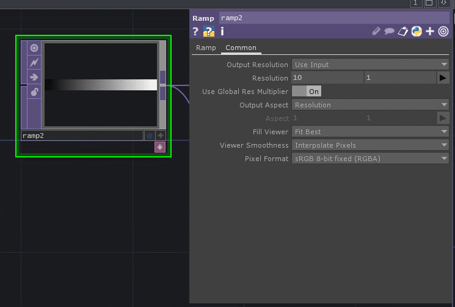

First and foremost, it’s important for us to start to think of a pixel as being a coordinate. Just like we might use pixels to create an image with color, we can use that same idea of color- red, green, blue - to translate to location - x, y, and z. When we’re working with TOPs for instancing, our color information is our location information (mostly, but not always).
We’ll also likely want to work with a higher bit depth for our TOPs. We’ll want to use a higher bit depth in part because we’ll get smoother motion, and reduced stepping in our instances. We’ll also be able to more easily work with negative values - when working with images this isn’t as important, but for pixels as positions we’ll need to have negative values stored in our TOPs.
If you’ve never set your TOPs to have a different bit depth you can do this from the common page:

In this example we’ll use a simple Ramp TOP to get our bearings. The idea here is that our ramp represents our x positions for our instances. The number of pixels is going to determine our number of instances. Next we’ll use a Reorder TOP to re-arrange our data a little bit. Here we’ll use our Ramp to define our red channel (or x), and a constant to define our green and blue channels (y and z).
We’ll then use a math TOP to change the range these values from being 0 to 1 to being in a range of -1 to 1. A TOP to CHOP helps us quickly confirm that our values are what we expect.

Finally, we can hook this up to our geometry COMP and we should see a simple row of instances.
This isn’t too exciting yet, but it’s the foundational elements we’ll need to really start to play with these ideas a little more.